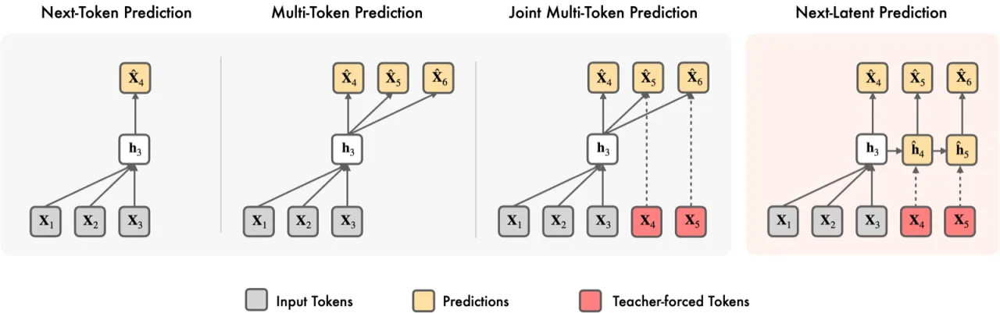
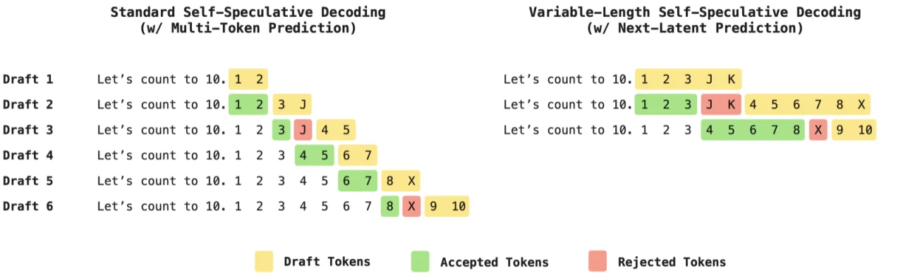
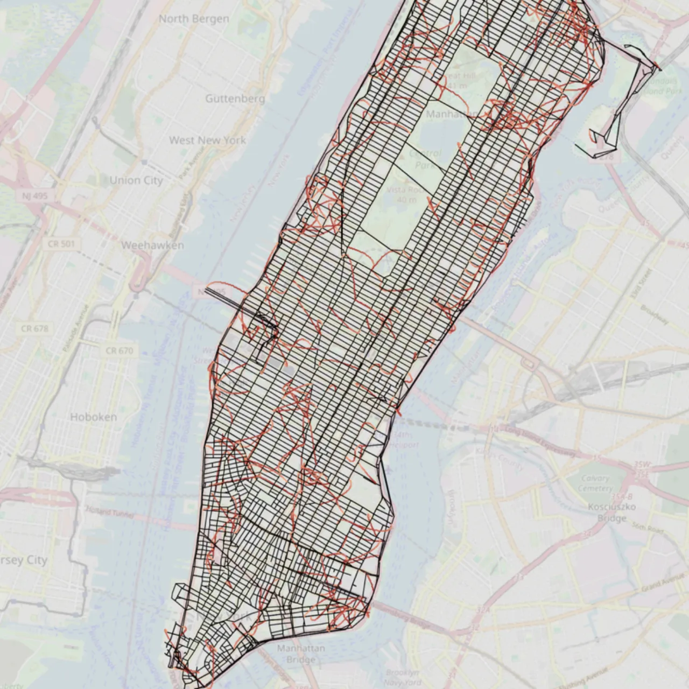
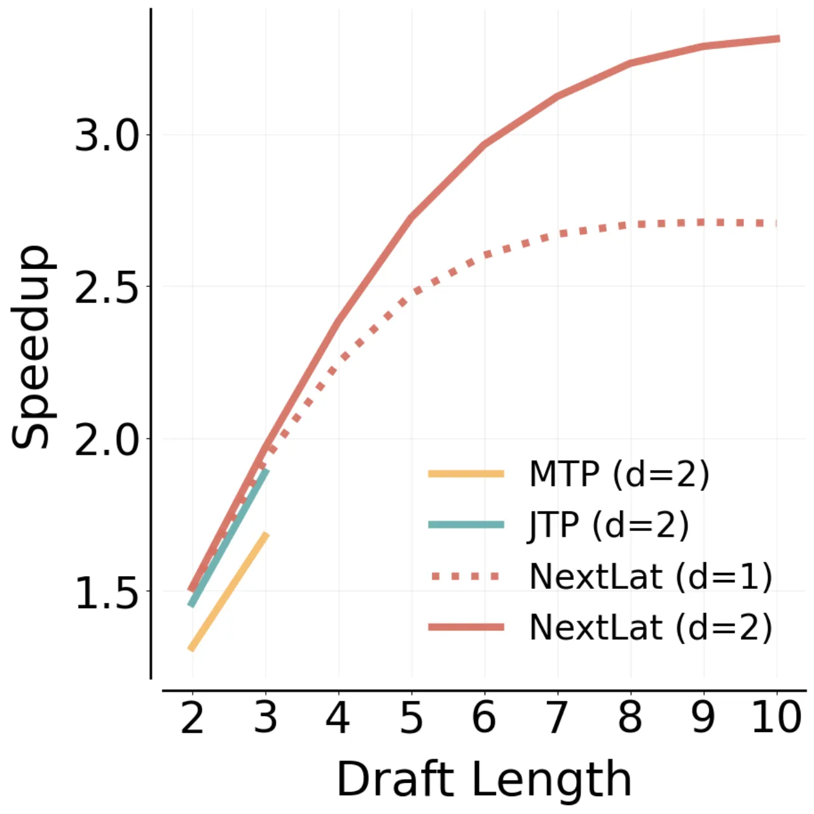
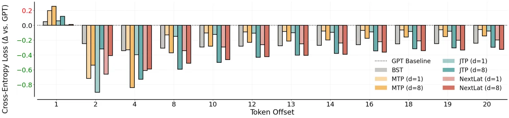

标准 next-token 预测缺乏压缩历史信息的内在动机，导致 Transformer 学到依赖 ad-hoc attention 查找的"捷径"，泛化能力有限。本文提出 NextLat——在不改变模型架构和推理流程的前提下，额外训练一个轻量 latent dynamics model，令每一步隐藏状态能预测下一步隐藏状态；理论上证明这使隐藏状态收敛为 belief states，并在世界建模、推理、规划和语言建模上全面提升性能，同时支持最高 3.3× 的 self-speculative decoding 加速。
Transformer 的自注意力机制允许模型在任意时刻直接"查询"过去的 token，从而不必把历史信息压缩成紧凑的内部状态。这带来了一个根本性的问题：
"Transformers lack an inherent incentive to compress history into compact latent states with consistent transition rules, which often leads to learning solutions that generalize poorly."
相比之下，循环神经网络（RNN）因为每步只能访问一个固定大小的隐藏状态，被迫学习紧凑的状态表征。如果能把这种"循环归纳偏置"（recurrent inductive bias）注入 Transformer，同时保留其并行训练优势，就能得到一个既高效又泛化能力强的模型。这正是 NextLat 的出发点。

NextLat 在标准 Transformer 之外附加一个轻量 latent dynamics model（实验中为简单 MLP），通过三个损失函数联合训练，推理时 dynamics model 完全被丢弃，不增加任何推理开销。
联合损失函数（公式 5）为：
ℒNextLat = ℒnext-token + λnext-h·ℒnext-h + λKL·ℒKL
论文在 POMDP 框架下严格证明：若 NextLat 同时最优化 next-token 一致性和 transition 一致性，则隐藏状态必然成为 belief states——即"预测未来所需历史信息的充分统计量"（sufficient statistics of history for predicting future tokens）。这是首个证明潜在状态预测能诱导 Transformer 学习 belief state 的理论结果。

实验覆盖五类任务：世界建模（Manhattan 出租车）、推理（Countdown / Game of 24）、规划（Path-Star 图）、语言建模（FineWeb-Edu，1.3B 参数，100B tokens）、长程预测性（TinyStories）和状态追踪（A₅ 单词问题）。
在有向图上随机游走数据集（OOD 测试）中，评估内部表征是否能重建地图结构：
| 模型 | 有效轨迹率 (OOD) | 序列压缩比 | 有效潜在秩 | 绕路鲁棒性 |
|---|---|---|---|---|
| GPT | 97.0% | — | 160.1 | — |
| MTP (d=8) | 98.1% | — | — | — |
| NextLat | 98.7% | 0.71（最高） | 52.7（最低） | 95.0% |
NextLat 的有效潜在秩（52.7）约为 GPT（160.1）的 1/3，说明其表征更紧凑，确实在内部维持了类似"地图"的世界模型。

| 任务 | GPT | MTP (d=8) | NextLat (d=1) |
|---|---|---|---|
| Countdown（Game of 24）准确率 | 33.1% | 57.3% | 54.8% |
| G₇,₇ 规划（Path-Star 图） | 部分失败 | 大幅失败 | ~100% |
在 G₇,₇ 规划任务上，NextLat 接近满分，而 MTP/JTP 大幅失败，说明 NextLat 的潜在空间监督有效避免了 token 空间方法的"捷径学习"（shortcut learning）问题。
| 模型 | FW-Edu PPL ↓ | Wiki PPL ↓ | LAMBADA PPL ↓ |
|---|---|---|---|
| GPT | 10.52 | 17.93 | 20.26 |
| MTP (d=2) | 11.00 | 18.61 | 18.34 |
| NextLat (d=2) | 10.88 | 18.44 | 17.83 |
NextLat 在保持 next-token 性能的同时（与 GPT 相近），在 LAMBADA 长程依赖基准上显著优于 MTP/JTP。
| 模型 (d=2) | Books 加速比 | Books 平均接受 token 数 | Wiki 加速比 |
|---|---|---|---|
| MTP | 1.72× | 1.83 | — |
| JTP | 1.90× | 1.89 | — |
| NextLat | 3.32× | 4.86 | 3.21× |


| 模型 | 训练速度（steps/sec） |
|---|---|
| GPT | 3.09 |
| NextLat (d=1) | 3.09（与 GPT 相同） |
| MTP (d=1) | 2.80 |
| NextLat (d=8) | 1.73 |
| BST | 0.89（慢 3.5×） |
d=1 时 NextLat 与 GPT 训练速度完全相同，梯度计算复杂度为 O(Td)，远优于 BST 的 O(T²)。
所有实验均使用简单 MLP 作为 latent dynamics model，"more expressive architectures unexplored"。更复杂的 dynamics model（如 Transformer）是否能带来进一步提升尚不清楚。
Stop-gradient、KL loss 等关键设计选择"guided by small-scale ablations, not principled principles"，且没有系统性研究 d>1 和 KL 监督在大规模场景下是否必要。
论文未系统比较 DeepSeek-v3 等近期更强的 MTP 变体，使得 NextLat 在最新工业实践中的相对优势尚不明确。
"Speculative decoding uses fixed draft lengths per prompt, not adaptive"。每个 prompt 的最优草稿长度应自适应调整，但当前实现使用固定长度，未能充分挖掘 NextLat 可变长度的潜力。
损失轨迹因优化器（AdamW vs. Muon）而异；NextLat 学到的表征语义结构"not thoroughly analyzed"，缺乏对内部 belief state 的更深入可解释性研究。